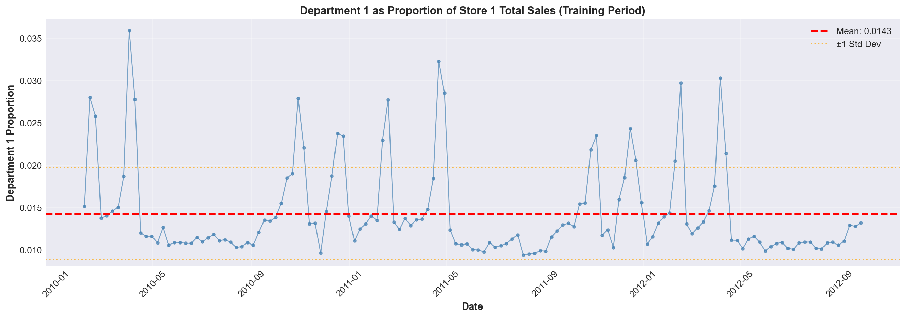
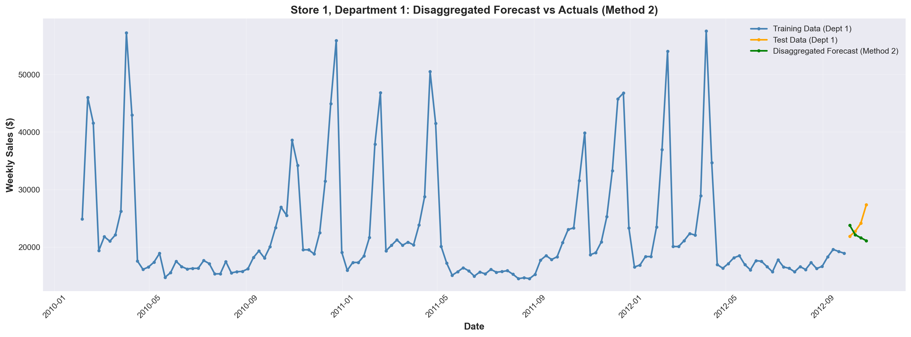
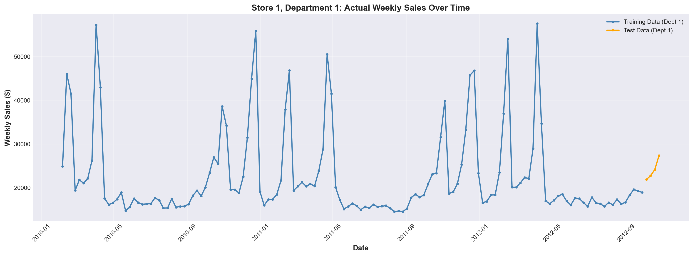

Comparing Aggregate vs. Direct Department-Level Forecasting
Author
Costin-Andrei Taulescu & Panagiotis Valsamis
Published
January 25, 2026
Executive Summary
This is the part 1 of the project and explores time series forecasting using Walmart’s historical sales data. We compare two forecasting approaches:
Method 1: Direct forecasting at the department level
Method 2: Forecasting at an aggregated store level, then disaggregating to departments
The analysis focuses on Store 1, Department 1, using Holt-Winters seasonal exponential smoothing models.
Key Finding
Method 2 (Aggregate-then-Disaggregate) outperformed Method 1 (Direct Forecasting) with an RMSE improvement of 15.22 (3.96%), demonstrating that aggregation can reduce noise and improve forecast accuracy for stable departments.
Reproducibility Setup
Environment Setup
We recommend creating a virtual environment to ensure reproducible results.
import pandas as pdimport numpy as npimport matplotlib.pyplot as pltimport seaborn as snsfrom datetime import datetime, timedelta import warningsfrom scipy import statsfrom statsmodels.tsa.stattools import adfuller, kpssimport pymannkendall as mkfrom scipy.stats import linregress# Suppress warnings for cleaner outputwarnings.filterwarnings('ignore')# Set plotting styleplt.style.use('seaborn-v0_8-darkgrid')sns.set_palette("husl")
Data Overview
Loading the Dataset
Code
# Load training datadf = pd.read_csv("../data/train.csv")print(f"Dataset shape: {df.shape}")print(f"\nFirst few rows:")print(df.head())print(f"\nStatistical summary:")print(df.describe())print(f"\nData types and null counts:")print(df.info())print(f"\nMissing values:")print(df.isnull().sum())
Dataset shape: (421570, 5)
First few rows:
Store Dept Date Weekly_Sales IsHoliday
0 1 1 2010-02-05 24924.50 False
1 1 1 2010-02-12 46039.49 True
2 1 1 2010-02-19 41595.55 False
3 1 1 2010-02-26 19403.54 False
4 1 1 2010-03-05 21827.90 False
Statistical summary:
Store Dept Weekly_Sales
count 421570.000000 421570.000000 421570.000000
mean 22.200546 44.260317 15981.258123
std 12.785297 30.492054 22711.183519
min 1.000000 1.000000 -4988.940000
25% 11.000000 18.000000 2079.650000
50% 22.000000 37.000000 7612.030000
75% 33.000000 74.000000 20205.852500
max 45.000000 99.000000 693099.360000
Data types and null counts:
<class 'pandas.core.frame.DataFrame'>
RangeIndex: 421570 entries, 0 to 421569
Data columns (total 5 columns):
# Column Non-Null Count Dtype
--- ------ -------------- -----
0 Store 421570 non-null int64
1 Dept 421570 non-null int64
2 Date 421570 non-null object
3 Weekly_Sales 421570 non-null float64
4 IsHoliday 421570 non-null bool
dtypes: bool(1), float64(1), int64(2), object(1)
memory usage: 13.3+ MB
None
Missing values:
Store 0
Dept 0
Date 0
Weekly_Sales 0
IsHoliday 0
dtype: int64
Data Quality: Handling Negative Sales
Data Issue Detected
The dataset contains negative values in Weekly_Sales, which are not meaningful in this context. We will set these to zero.
Code
def make_negative_values_zero(df, column_name):"""Set negative values in a column to zero.""" df.loc[df[column_name] <0, column_name] =0return dfdef negative_values(df, column_name):"""Filter rows with negative values in a column."""return df[df[column_name] <0]
Focus: Store 1 Analysis
For this analysis, we focus exclusively on Store 1 to compare forecasting methods.
Code
# Filter for Store 1df_store_1 = df[df['Store'] ==1].copy()df_store_1 = make_negative_values_zero(df_store_1, "Weekly_Sales")print(f"Store 1 data shape: {df_store_1.shape}")print(f"\nDepartments in Store 1:")print(df_store_1["Dept"].value_counts().sort_index())
Store 1 data shape: (10244, 5)
Departments in Store 1:
Dept
1 143
2 143
3 143
4 143
5 143
...
95 143
96 122
97 143
98 143
99 37
Name: count, Length: 77, dtype: int64
Train-Test Split
Code
# Convert Date to datetimedf_store_1['Date'] = pd.to_datetime(df_store_1['Date'])# Define test period: last 4 weeksmax_date = df_store_1['Date'].max()test_start_date = max_date - pd.Timedelta(weeks=3)print(f"Training data: Up to {test_start_date}")print(f"Test data: {test_start_date} to {max_date}")# Split datadf_store_1_train = df_store_1[df_store_1['Date'] < test_start_date].copy()df_store_1_test = df_store_1[df_store_1['Date'] >= test_start_date].copy()
Training data: Up to 2012-10-05 00:00:00
Test data: 2012-10-05 00:00:00 to 2012-10-26 00:00:00
Figure 1: Store 1 Aggregated Weekly Sales (Training Period)
Initial Observations
Seasonal Patterns Observed
Clear peaks at year-end (holiday shopping)
Consistent troughs at year start (post-holiday slowdown)
Regular seasonal cycle without strong trend
Step 2: Statistical Tests for Trend
Before modeling, we test whether the series exhibits a significant trend.
Notes for Statistical Tests
Why we used stationary test (ADF,KPSS) for checking for trend? Stationary series has constant mean, an increasing or decreasing trend violates this definition.
MANN-KENDALL test and COX-STUART test are mainly used for identifying trend.
Code
from run_trend_analysis import analyze_seriesdf_store_for_tests = store_1_aggregated_train["Weekly_Sales"]results = analyze_series(df_store_for_tests, series_name="Store 1")
######################################################################
COMPREHENSIVE TREND ANALYSIS FOR: Store 1
######################################################################
Data points: 139
Mean: 1555116.40
Std Dev: 157221.96
Min: 1316899.31
Max: 2387950.20
======================================================================
1. MANN-KENDALL TEST (Non-parametric)
======================================================================
Trend: increasing
Test Statistic (S): 1743.0
p-value: 0.001514
Tau (correlation): 0.181733
z-score: 3.172081
RESULT: Significant trend detected (p < 0.05)
Direction: increasing
======================================================================
2. AUGMENTED DICKEY-FULLER (ADF) TEST
======================================================================
ADF Statistic: -5.037909
p-value: 0.000019
Lags used: 4
Number of observations: 134
Critical Values:
1%: -3.480
5%: -2.883
10%: -2.578
RESULT: Series is stationary (p < 0.05)
No unit root → Suggests NO trend
======================================================================
3. KPSS TEST (Kwiatkowski-Phillips-Schmidt-Shin)
======================================================================
KPSS Test (with trend):
KPSS Statistic: 0.058672
p-value: 0.100000
Lags used: 3
Critical Values:
10%: 0.119
5%: 0.146
2.5%: 0.176
1%: 0.216
RESULT: Series is trend stationary (p >= 0.05)
Null hypothesis not rejected → NO significant trend
======================================================================
4. LINEAR REGRESSION TEST
======================================================================
Slope: 872.876123
Intercept: 1494887.95
R-squared: 0.049625
p-value: 0.008392
Standard Error: 326.352820
95% Confidence Interval for slope: [227.535870, 1518.216375]
RESULT: Significant positive linear trend (p < 0.05)
======================================================================
5. COX-STUART TEST (Non-parametric)
======================================================================
Number of pairs: 69
Plus signs (+): 41 (second half > first half)
Minus signs (-): 28 (second half < first half)
Ties: 0
p-value: 0.148032
RESULT: No significant trend (p >= 0.05)
======================================================================
6. SPEARMAN'S RANK CORRELATION TEST (Bonus)
======================================================================
Spearman's rho: 0.291193
p-value: 0.000506
RESULT: Significant positive monotonic trend (p < 0.05)
======================================================================
SUMMARY OF RESULTS
======================================================================
Trend Detection Tests:
Mann-Kendall: increasing (p=0.0015)
Linear Regression: Trend (p=0.0084)
Cox-Stuart: No Trend (p=0.1480)
Spearman: Trend (p=0.0005)
Stationarity Tests:
ADF: Stationary (p=0.0000)
KPSS: Trend Stationary (p=0.1000)
Trend Analysis Conclusion
Mixed results from statistical tests suggest weak or no persistent trend. Visual inspection confirms regular seasonality without long-term increase/decrease. Therefore, we use Holt-Winters Seasonal (No Trend) model.
Why Holt-Winters
Holt Winters uses exponential smoothing to assign more weight to recent observations while reducing the influence of older data. This method ensures that the model is responsive to recent changes in seanlity or trends(here we assumed no trend), making it ideal for scenarios where the latest data is the most relevant for forecasting.
Balances recent and historical data. As we said it uses exponential smoothing to prioritize recent observations while still incorporating historical data.
Lower computational power. Compared to other machine learning and deep learning models requires by far less computational power and resources.
Drawbacks:
Sensitivity to parameter tuning. It requires grid search of the parameters in order not to provide inaccurate parameters.
It is not performing very well in non-linear patterns. While it performs well on datasets with clear trends and seasonal cycles it is not suited for datasets where exhibits non-linear growth or decline.
Table 1: Performance Comparison: Additive vs Multiplicative Seasonality
Metric Additive Multiplicative
Alpha 0.15 0.15
Gamma 0.75 0.70
Train TSE 388685740510.08 405240934553.55
Test TSE 775926584.92 842717466.42
Test RMSE 13927.73 14514.80
Test MAE 11983.60 11739.95
Model Selection
Both models produce nearly identical forecasts. This similarity occurs because seasonal fluctuations remain relatively constant in absolute terms. We proceed with the additive model for disaggregation.
Department 1's proportion of Store 1 sales:
Mean: 0.0143 (1.43%)
Std: 0.0054

Figure 3: Department 1 as Proportion of Store 1 Total Sales
Apply Disaggregation
Code
# Disaggregate store-level forecastdept_1_forecast = additive_results['forecast'] * avg_proportion# Get actual Department 1 test datastore_1_dept_1_test = df_store_1_test[ (df_store_1_test['Store'] ==1) & (df_store_1_test['Dept'] ==1)].copy()store_1_dept_1_test = store_1_dept_1_test.sort_values('Date')y_test_dept_1 = store_1_dept_1_test['Weekly_Sales'].values# Evaluatetse_dept_1 = TSE(y_test_dept_1, dept_1_forecast)rmse_dept_1 = np.sqrt(np.mean((y_test_dept_1 - dept_1_forecast) **2))mae_dept_1 = np.mean(np.abs(y_test_dept_1 - dept_1_forecast))print(f"Department 1 Disaggregated Forecast Performance (Method 2):")print(f" Test TSE: {tse_dept_1:.2f}")print(f" Test RMSE: {rmse_dept_1:.2f}")print(f" Test MAE: {mae_dept_1:.2f}")# Visualizationstore_1_dept_1_train_plot = df_store_1_train[ (df_store_1_train['Store'] ==1) & (df_store_1_train['Dept'] ==1)].copy()store_1_dept_1_train_plot = store_1_dept_1_train_plot.sort_values('Date')plt.figure(figsize=(16, 6))plt.plot(store_1_dept_1_train_plot['Date'], store_1_dept_1_train_plot['Weekly_Sales'], label='Training Data (Dept 1)', linewidth=2, color='steelblue', marker='o', markersize=3)plt.plot(store_1_dept_1_test['Date'], y_test_dept_1, label='Test Data (Dept 1)', linewidth=2, color='orange', marker='o', markersize=3)plt.plot(store_1_dept_1_test['Date'], dept_1_forecast, label='Disaggregated Forecast (Method 2)', linewidth=2, color='green', marker='o', markersize=3)plt.xlabel('Date', fontsize=12, fontweight='bold')plt.ylabel('Weekly Sales ($)', fontsize=12, fontweight='bold')plt.title('Store 1, Department 1: Disaggregated Forecast vs Actuals (Method 2)', fontsize=14, fontweight='bold')plt.legend()plt.grid(True, alpha=0.3)plt.xticks(rotation=45)plt.tight_layout()plt.show()# Store Method 2 resultsmethod2_results = {'tse_test': tse_dept_1,'rmse_test': rmse_dept_1,'mae_test': mae_dept_1,'forecast': dept_1_forecast.copy()}
Department 1 Disaggregated Forecast Performance (Method 2):
Test TSE: 49541178.78
Test RMSE: 3519.27
Test MAE: 2827.42

Figure 4: Method 2: Disaggregated Forecast for Department 1
Notes
From the above graph, we can see that the forecasted sales for department 1 using the aggregate-then-disaggregate method does not capture the actual sales pattern very well. The forecasted values are significantly lower than the actual sales during the 3/4 of the test period, indicating that this method may not be effective for department-level forecasting in this case.
We expect that Method 1 (direct forecasting at the department level) will outperform Method 2 (aggregate-then-disaggregate) for department-level forecasts. This is because Method 1 can capture department-specific trends and seasonal patterns that are lost when aggregating sales across all departments in Method 2. As a result, we anticipate lower forecast errors (e.g., RMSE) for Method 1 compared to Method 2 when evaluating at the department level.
Method 1: Direct Department-Level Forecasting
Data Preparation
Code
# Filter Store 1, Department 1df_store_1_dept_1 = df[(df['Store'] ==1) & (df['Dept'] ==1)].copy()df_store_1_dept_1 = make_negative_values_zero(df_store_1_dept_1, "Weekly_Sales")df_store_1_dept_1['Date'] = pd.to_datetime(df_store_1_dept_1['Date'])# Split train/testdf_store_1_dept_1_train = df_store_1_dept_1[df_store_1_dept_1['Date'] < test_start_date].copy()df_store_1_dept_1_test = df_store_1_dept_1[df_store_1_dept_1['Date'] >= test_start_date].copy()df_store_1_dept_1_train = df_store_1_dept_1_train.sort_values('Date')df_store_1_dept_1_test = df_store_1_dept_1_test.sort_values('Date')print(f"Department 1 training data shape: {df_store_1_dept_1_train.shape}")print(f"Department 1 test data shape: {df_store_1_dept_1_test.shape}")
Department 1 training data shape: (139, 5)
Department 1 test data shape: (4, 5)
Visualization
Code
plt.figure(figsize=(16, 6))plt.plot(df_store_1_dept_1_train['Date'], df_store_1_dept_1_train['Weekly_Sales'], label='Training Data (Dept 1)', linewidth=2, color='steelblue', marker='o', markersize=3)plt.plot(df_store_1_dept_1_test['Date'], df_store_1_dept_1_test['Weekly_Sales'], label='Test Data (Dept 1)', linewidth=2, color='orange', marker='o', markersize=3)plt.xlabel('Date', fontsize=12, fontweight='bold')plt.ylabel('Weekly Sales ($)', fontsize=12, fontweight='bold')plt.title('Store 1, Department 1: Actual Weekly Sales Over Time', fontsize=14, fontweight='bold')plt.legend()plt.grid(True, alpha=0.3)plt.xticks(rotation=45)plt.tight_layout()plt.show()

Figure 5: Store 1, Department 1: Raw Weekly Sales Data
Trend Analysis for Department 1
Code
analyze_series(df_store_1_dept_1_train["Weekly_Sales"], series_name="Store 1, Department 1")
######################################################################
COMPREHENSIVE TREND ANALYSIS FOR: Store 1, Department 1
######################################################################
Data points: 139
Mean: 22468.78
Std Dev: 9950.26
Min: 14537.37
Max: 57592.12
======================================================================
1. MANN-KENDALL TEST (Non-parametric)
======================================================================
Trend: no trend
Test Statistic (S): -423.0
p-value: 0.442227
Tau (correlation): -0.044104
z-score: -0.768437
RESULT: No significant trend (p >= 0.05)
======================================================================
2. AUGMENTED DICKEY-FULLER (ADF) TEST
======================================================================
ADF Statistic: -2.405435
p-value: 0.140208
Lags used: 6
Number of observations: 132
Critical Values:
1%: -3.481
5%: -2.884
10%: -2.579
RESULT: Series is non-stationary (p >= 0.05)
Unit root present → May have trend
======================================================================
3. KPSS TEST (Kwiatkowski-Phillips-Schmidt-Shin)
======================================================================
KPSS Test (with trend):
KPSS Statistic: 0.081207
p-value: 0.100000
Lags used: 4
Critical Values:
10%: 0.119
5%: 0.146
2.5%: 0.176
1%: 0.216
RESULT: Series is trend stationary (p >= 0.05)
Null hypothesis not rejected → NO significant trend
======================================================================
4. LINEAR REGRESSION TEST
======================================================================
Slope: -22.763939
Intercept: 24039.49
R-squared: 0.008427
p-value: 0.282481
Standard Error: 21.097145
95% Confidence Interval for slope: [-64.482092, 18.954213]
RESULT: No significant linear trend (p >= 0.05)
======================================================================
5. COX-STUART TEST (Non-parametric)
======================================================================
Number of pairs: 69
Plus signs (+): 31 (second half > first half)
Minus signs (-): 38 (second half < first half)
Ties: 0
p-value: 0.470369
RESULT: No significant trend (p >= 0.05)
======================================================================
6. SPEARMAN'S RANK CORRELATION TEST (Bonus)
======================================================================
Spearman's rho: -0.072251
p-value: 0.397978
RESULT: No significant monotonic trend (p >= 0.05)
======================================================================
SUMMARY OF RESULTS
======================================================================
Trend Detection Tests:
Mann-Kendall: no trend (p=0.4422)
Linear Regression: No Trend (p=0.2825)
Cox-Stuart: No Trend (p=0.4704)
Spearman: No Trend (p=0.3980)
Stationarity Tests:
ADF: Non-Stationary (p=0.1402)
KPSS: Trend Stationary (p=0.1000)
Training Method 1 - Additive Model...
Additive - Best parameters: alpha=0.05, gamma=0.30
Test RMSE: 5238.80
Training Method 1 - Multiplicative Model...
Multiplicative - Best parameters: alpha=0.55, gamma=0.95
Test RMSE: 5175.90
Selected for comparison: Multiplicative model